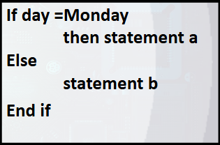
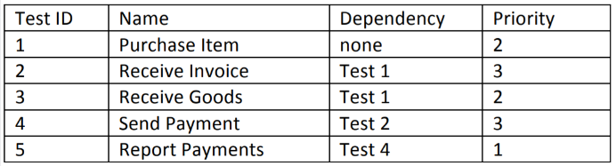

1. Which of the following statements is a valid objective for testing?
1. Phát biểu nào sau đây là một mục tiêu hợp lệ của hoạt động kiểm thử?
2. Which of the following statements correctly describes the difference between testing and debugging?
2. Phát biểu nào sau đây mô tả đúng sự khác biệt giữa kiểm thử (testing) và gỡ lỗi (debugging)?
3. Which one of the statements below describes a failure discovered during testing or in production?
3. Phát biểu nào dưới đây mô tả một lỗi (failure) được phát hiện trong quá trình kiểm thử hoặc khi vận hành (production)?
4. Which one of the following is the BEST definition of an incremental development model?
4. Đâu là định nghĩa TỐT NHẤT về mô hình phát triển gia tăng (incremental development model)?
5. Which of the following is a true statement regarding the V-model lifecycle?
5. Phát biểu nào sau đây là đúng về mô hình vòng đời chữ V (V-model)?
6. In an iterative lifecycle model, which of the following is an accurate statement about testing activities?
6. Trong mô hình vòng đời lặp (iterative lifecycle model), phát biểu nào sau đây là chính xác về các hoạt động kiểm thử?
7. Which of the following comparisons of component testing and system testing is true?
7. So sánh nào sau đây giữa kiểm thử thành phần (component testing) và kiểm thử hệ thống (system testing) là đúng?
8. For a formal review, at what point in the process are the entry and exit criteria defined?
8. Đối với một review chính thức (formal review), ở giai đoạn nào trong quy trình thì các tiêu chí đầu vào (entry criteria) và tiêu chí kết thúc (exit criteria) được xác định?
9. If the author of the code is leading a code review for other developers and testers, what type of review is it?
9. Nếu tác giả của đoạn code dẫn dắt (chủ trì) một buổi review code cho các developer và tester khác, thì đó là loại review nào?
10. If a review session is led by the author of the work product, what type of review is it?
10. Nếu một buổi review được chính tác giả của tài liệu/sản phẩm dẫn dắt, thì đó là loại review nào?
11. You are preparing for a review of a mobile application that will allow users to transfer money between bank accounts from different banks. Security is a concern with this application and the previous version of this application had numerous security vulnerabilities (some of which were found by hackers). It is very important that this doesn’t happen again. Given this information, what type of review technique would be most appropriate?
11. Bạn đang chuẩn bị cho một buổi review một ứng dụng di động cho phép người dùng chuyển tiền giữa các tài khoản ngân hàng khác nhau. Bảo mật là một vấn đề đáng lo ngại với ứng dụng này và phiên bản trước đã có rất nhiều lỗ hổng bảo mật (một số do hacker phát hiện). Điều rất quan trọng là điều này không được lặp lại. Dựa trên thông tin này, kỹ thuật review nào là phù hợp nhất?

12. How many test cases are necessary to achieve 100 % statement coverage
12. Cần bao nhiêu test case để đạt được 100% độ bao phủ câu lệnh (statement coverage)?

13. What is the minimum number of test cases needed to achieve 100% statement coverage?
13. Số lượng test case tối thiểu cần thiết để đạt được 100% độ bao phủ câu lệnh (statement coverage) là bao nhiêu?
14. Which one of the following is the BEST description of statement coverage?
14. Đâu là mô tả TỐT NHẤT về độ bao phủ câu lệnh (statement coverage)?
15. How is statement coverage determined?
15. Độ bao phủ câu lệnh (statement coverage) được xác định như thế nào?
16. The following statement refers to decision coverage: “When the code contains only a single ‘if’ statement and no loops or CASE statements, any single test case we run will result in 50% decision coverage.” Which of the following sentences is correct?
16. Phát biểu sau đề cập đến độ bao phủ quyết định (decision coverage): “Khi mã nguồn chỉ chứa một câu lệnh ‘if’ duy nhất và không có vòng lặp hay câu lệnh CASE, bất kỳ một test case đơn lẻ nào được chạy cũng sẽ tạo ra 50% độ bao phủ quyết định.” Câu nào sau đây là đúng?
17. If you are testing a module of code, how do you determine the level of decision coverage you have achieved?
17. Nếu bạn đang kiểm thử một module của mã nguồn, bạn xác định mức độ bao phủ quyết định (decision coverage) đã đạt được như thế nào?
18. If you have a section of code that has one simple IF statement, how many tests will be needed to achieve 100% decision coverage?
18. Nếu bạn có một đoạn mã chỉ chứa một câu lệnh IF đơn giản, cần bao nhiêu test để đạt được 100% độ bao phủ quyết định (decision coverage)?
19. Which of the following situations is NOT suited for using exploratory testing?
19. Tình huống nào sau đây KHÔNG phù hợp để sử dụng kiểm thử thăm dò (exploratory testing)?
20. Which of the following is a good reason to use experience-based testing?
20. Đâu là lý do tốt để sử dụng kiểm thử dựa trên kinh nghiệm (experience-based testing)?
21. If you are using error guessing to target your testing, which type of testing are you doing?
21. Nếu bạn sử dụng kỹ thuật phỏng đoán lỗi (error guessing) để định hướng việc kiểm thử, bạn đang thực hiện loại kiểm thử nào?
22. What is error guessing?
22. Phỏng đoán lỗi là gì?
23. When exploratory testing is conducted using time-boxing and test charters, what is it called?
23. Khi kiểm thử thăm dò (exploratory testing) được thực hiện bằng cách sử dụng time-boxing và test charter, thì nó được gọi là gì?
24. If your test strategy is based off the list of the ISO 25010 quality characteristics, what type of strategy is it?
24. Nếu chiến lược kiểm thử của bạn dựa trên danh sách các đặc tính chất lượng theo tiêu chuẩn ISO 25010, thì đó là loại chiến lược nào?
25. You are getting ready to test another upgrade of an ERP system. The previous upgrade was tested by your team and has been in production for several years. For this situation, which of the following is the most appropriate test effort estimation technique?
25. Bạn đang chuẩn bị kiểm thử một bản nâng cấp khác của hệ thống ERP. Bản nâng cấp trước đó đã được đội của bạn kiểm thử và đã vận hành trong môi trường production suốt nhiều năm. Trong tình huống này, kỹ thuật ước lượng công sức kiểm thử nào là phù hợp nhất?
